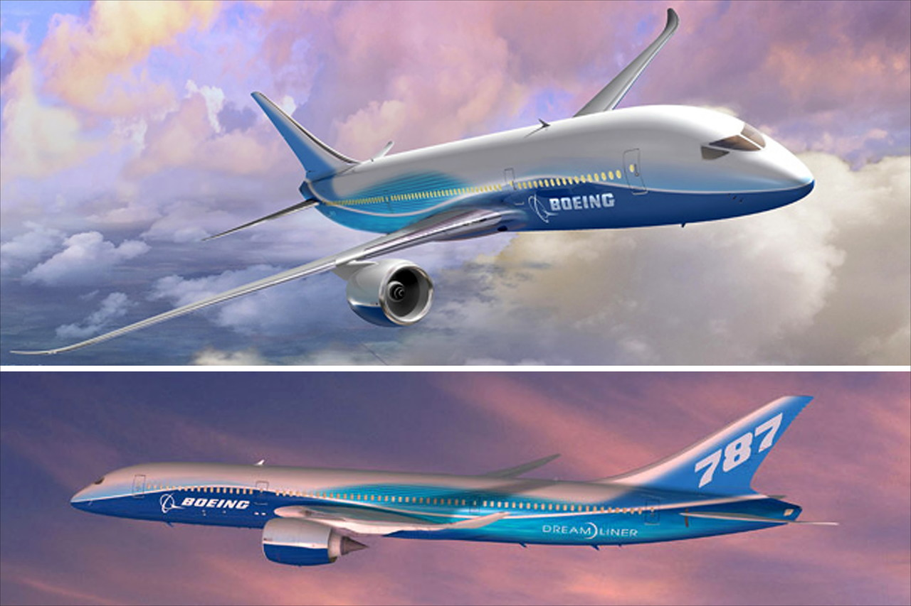

Композитный самолет
В это время компания Boeing стала выпускать самолеты, которые были сделаны из композитного 3-х слойного материала, который увеличивал прочность не только крыльев самолета, но и самого корпуса.
В конце 1990-х годов, когда продажи модели 767 замедлились, компания Boeing начала работать над изучением новых программ по его замене. В результате 29 марта 2001 года мировому сообществу был предложен проект Sonic Cruiser, крейсерская скорость которого должна была составить 0,95 – 0,99М, что на 15% быстрее обычных пассажирских самолетов. При этом расход топлива не должен был превышать показатели модели 767. Самолет рассчитывался на 200 – 250 пассажиров и имел компоновочную схему “утка”. Первоначальные эскизы, выпущенные для публикаций, были очень схематичными. Длина самолета составляла около 75 метров, а размах крыла около 50 метров. Предполагалось, что он будет летать на высоте 12 км и покрывать расстояния от 11000 до 19000 км. Несколько крупных компаний, включая Continental Airlines, заинтересовались этим проектом, хотя и выразили озабоченность по поводу эксплуатационных расходов. 2.
Однако теракт 11 сентября 2001 года вызвал общеэкономический спад в отрасли. Плюс выросли цены на нефть. Эти события заставили менеджеров авиакомпаний больше задуматься об экономичности, чем о скорости. Кроме того, возросшие эксплуатационные расходы нового самолета не могли компенсироваться увеличением скорости полета. Все это привело к тому, что 20 декабря 2002 года компания Boeing закрыла проект Sonic Cruiser, сменив курс в сторону самолета более традиционной конфигурации, но в тоже время обладающего экономическими преимуществами. Уже через два месяца 29 января 2003 года было объявлено о запуске проекта 7E7 (будущего 787), который будет потреблять на 20% меньше топлива, чем существующие пассажирские лайнеры. В июле 2003 года был проведен общественный конкурс на лучшее название нового самолета. В онлайн голосовании приняли участие около 500 000 человек. В финале победил вариант Dreamliner. Так же за победу боролись такие названия как eLiner, Global Cruiser и Stratoclimber. Компания Boeing переименовала индекс 7E7 в 787. Boeing 787 Dreamliner стал первым коммерческим пассажирским реактивным самолетом, спроектированным с учетом последних достижений авиационных технологий, таких как передовое бортовое электронное оборудование и фюзеляж, состоящий более чем на 50% из композитных материалов на основе углерода. Впервые в истории корпус самолета собирается не из алюминиевых панелей, а из секций, обшивка которых представляет собой цельную композитную деталь. Это позволило сделать самолет легче и прочнее, чем обычный лайнер с алюминиевым фюзеляжем. Boeing 787 проектировался с учетом требований к топливной эффективности, чтобы позволить пассажирам путешествовать прямыми рейсами без пересадок. В качестве силовой установки были выбраны два двигателя компаний Rolls-Royce и General Electric.
На первых картинках, распространенных компанией Boeing, самолет имел необычное остекление и вертикальное оперение похожее на плавник акулы. Однако окончательный дизайн был более консервативным. Остекление и вертикальное оперение стали более традиционными.
Кабина пилотов в самолетах 787 оборудована по последнему слову техники, включая большие проекционные индикаторы лобового стекла и жидкокристаллические дисплеи, дающие пилотам больше информации в легко читаемом формате.
Пассажирский салон нового самолета разрабатывался при активном участии самих пассажиров. Небольшая группа специалистов анализировала эмоциональные и психологические потребности людей на борту самолета по всему миру. Весь дизайн интерьера был основан на результатах этих исследований. Свет в салоне меняется в соответствии с суточными ритмами пассажиров. Это позволяет легче переносить разницу во времени при дальних перелетах. Плюс на самолете были установлены большие окна с управляемым затемнением. Благодаря композитной конструкции, не подверженной коррозии, влажность воздуха в салоне увеличили с 3 - 4% до 10 - 12%. Так же благодаря прочной композитной обшивке стало возможно поддерживать давление в салоне соответствующее высоте 2400 метров. Это делает путешествие более комфортным и менее утомительным.
16 декабря 2003 года компания Boeing объявила о том, что финальная сборка нового самолета будет проходить на заводе в городе Everett, штат Вашингтон. Но сам процесс сборки будет несколько изменен. Вместо того чтобы собирать самолет с нуля в традиционной манере, на сборку будут поступать уже готовые секции с установленным оборудованием и проводкой. Boeing построил систему так, что каждый субподрядчик будет собирать свою секцию почти целиком, после чего она будет отправляться в Everett на финальную сборку. Это позволит использовать более компактную и простую сборочную линию, меньшее количество оборудования и от 800 до 1200 рабочих. А установленное субподрядчиками в секции оборудование поможет значительно сократить время финальной сборки. В проекте 787 задействован практически весь мир. Крыло производится в Японии, горизонтальное оперение в Италии, секции фюзеляжа в США, Японии, Италии и Южной Корее. Пассажирские двери во Франции, грузовые двери в Швеции. Титан для основных опор шасси поставляется из России. Программное обеспечение разрабатывается в Индии. Кроме того, компания Boeing впервые отдала сторонним компаниям не только производство, но так же и исследовательские работы. Субподрядчики стали ответственны, в том числе и финансово, за разработку, техническое оснащение и изготовление своей части самолета.
Стартовым заказчиком для Dreamliner стала японская авиакомпания All Nippon Airways, которая 26 апреля 2004 года объявила твердый заказ на 50 самолетов. Поставки должны были начаться в конце 2008 года.
Для ускорения процесса доставки компонентов со всего света в Everett, компания Boeing модернизировала четыре самолета 747-400, создав лайнер с самым большим грузовым отсеком в мире. Он получил название Boeing 747LCF (Large Cargo Freighter), а в декабре 2006 года компания Boeing объявила, что новый грузовой самолет будет называться Dreamlifter. 9.
Boeing 747LCF был спроектирован исключительно для транспортировки частей самолета Boeing 787, производимых сторонними поставщиками. Таким образом, сроки доставки компонентов из Японии сократились с 30 дней морским путем до 8 часов полета на 747LCF. В разработке этого самолета приняли участие инженеры Московского конструкторского центра компании Boeing – MBDC. Производство велось в Тайване на фирме Evergreen Aviation Technologies Corporation. Для создания 747LCF компания Boeing купила четыре самолета у нескольких авиакомпаний: один у Air China, один у Malaysia Airlines и два у China Airlines. Первый переделанный грузовик выкатили из сборочного цеха 17 августа 2006 года, а 9 сентября 2006 года он совершил свой первый испытательный полет.
В процессе испытаний с самолета были сняты загнутые законцовки крыла. Это позволило решить проблему повышенной вибрации. Boeing 747LCF начал доставлять части 787 со всего мира на сборочную линию в Everett еще в качестве программы летных испытаний. 2 июня 2007 года самолет получил сертификат Федерального управления гражданской авиации (FAA). К этому времени самолет налетал 437 часов. Загрузка и разгрузка секций происходит через открывающийся в бок хвост летательного аппарата. Объем его грузового отсека составляет 1840 м3, что на 300% больше объема отсека обычного грузового Boeing 747-400F.
Изначально программа 787 должна была включать три модификации: 787-3, 787-8 и 787-9. Модификация 787-3 должна была заменить Boeing 767 и Airbus A300 на внутренних рейсах Японии. Однако авиакомпания All Nippon Airways в последствии отказалась от этой модификации и работы по модели -3 были остановлены. Зато впоследствии появилась новая модификация 787-10 с увеличенным числом пассажиров. В самом начале программы планировалось поднять Boeing 787 в воздух 8 июля 2007 года. Это была символичная дата: 07.08.07 (в США месяц указывается перед числом). Однако компания столкнулась с множеством проблем. Самолет получился перетяжеленным. Для снижения лишнего веса Boeing перепроектировал некоторые части и сделал более широкое использование титана в конструкции планера. Плюс возникли проблемы с поставками от субподрядчиков. В итоге 8 июля 2007 года вместо первого полета состоялась выкатка самолета Boeing 787 из сборочного цеха. К тому времени на самолете еще не было установлено множество систем, а некоторые элементы имели временные крепления. После торжественной части самолет вернулся обратно в цех, где продолжились производственные работы. Сроки первого полета и соответственно поставок сдвигались много раз. Причинами были неполное программное обеспечение самолета, проблемы с цепочкой поставок и отсутствие документов от зарубежных поставщиков, забастовки рабочих, результаты испытаний и переделки конструкции. Компания терпела убытки, а авиакомпании требовали компенсаций за задержки. 7 августа 2007 года двигатель компании Rolls-Royce получил сертификат для использования на самолете 787. General Electric сертифицировала свой двигатель 31 марта 2008 года. Зубчатый рисунок срезов мотогондол, названый шевронами, вместе с другими методами позволил снизить шумность двигателя на 60% по сравнению с другими самолетами.
Наконец 15 декабря 2009 года после многочисленных наземных тестов Boeing 787-8 совершил свой первый полет. Это было начало 9-и месячной программы летных испытаний, которая позже была уменьшена до 8,5 месяцев. Из-за плохой погоды первый полет был сокращен на час и составил 3 часа 8 минут. В программе летных испытаний были задействованы первые 6 самолетов. Четыре с двигателями Rolls-Royce и два с General Electric. Шестой самолет присоединился к программе летных испытаний 4 октября 2010 года.
В ходе испытаний Boeing 787 посетил 14 стран в Азии, Европе а так же в Северной и Южной Америке, налетав 4828 часов. 26 августа 2011 года Федеральное управление гражданской авиации (FAA) сертифицировало Boeing 787-8. Первый Dreamliner был официально поставлен авиакомпании All Nippon Airways 25 сентября 2011 года. Торжественная церемония по этому случаю была проведена на следующий день. По данным стартового заказчика All Nippon Airways, 787 превзошел обещанные 20% снижения потребления топлива по сравнению с моделью 767. На маршруте Tokyo - Frankfurt, экономия топлива составила 21%.
Тем временем в разработке находилась удлиненная версия самолета – 787-9. Внешне эта модификация отличается двумя вставками в фюзеляж по 3 метра каждая (по 120 дюймов). Однако внутри это совершенно другой самолет. Отличия коснулись не только оборудования и систем, но и конструкции планера. Впервые он поднялся в воздух 17 сентября 2013 года. Если производство модификации 787-8 велось только на одном заводе в городе Everett в штате Вашингтон, то новый самолет 787-9 было решено производить сразу на двух заводах: в городе Everett и на новом заводе компании Boeing в городе Charleston, штат Южная Королина.
После прохождения программы летных испытаний и сертификации, 30 июня 2014 года первый Boeing 787-9 был поставлен авиакомпании Air New Zealand. Самолет получил необычную черную окраску.
В июне 2013 года начались работы по самому большому представителю линейки самолетов Dreamliner – модификации 787-10. Для уменьшения расходов, времени и рисков новая модификация на 95% заимствована у предыдущей версии – 787-9. 4 декабря 2015 года было завершено детальное проектирование. Это произошло на 2 недели раньше запланированного срока. Таким образом, вся информация, необходимая для производства и сборки компонентов, готова. Производство модификации 787-10 будет происходить на заводе в городе Charleston, штат Южная Королина. Это в первую очередь связано с трудностью транспортировки фюзеляжа в город Everett. Boeing 787-10 на 5,49 метра (216 дюймов) длиннее модификации 787-9. На заводе в городе Charleston выполняются работы по интегрированию систем в секции фюзеляжа. Однако грузовой самолет Boeing 747LCF не способен взять на борт такую длинную секцию, чтобы перевезти ее в Everett. Поэтому производство 787-10 было решено организовать в штате Южная Королина. Кроме того это обеспечит эффективное использование мощностей этого завода. Первый полет новой модификации запланирован на 2017 год, а первая поставка – на 2018 год. Dreamliner стал самым продаваемым широкофюзеляжным самолетом в истории компании Boeing. На данный момент есть более 1150 заказов на него.
Активное участие в создании семейства самолетов 787 принимал Московский конструкторский центр компании Boeing – MBDC. Здесь велись работы по проектированию носовой части, балок пассажирского пола, проектировались различные системы, велись прочностные расчеты, создавалась звукоизоляция, элементы интерьера, разрабатывались инструкции по ремонту и многое многое другое.
В мире самолетостроения ставки высоки, риск неизбежен, а ошибки случаются у всех. Успех дается нелегко, но парой всего один самолет меняет все представления об авиаперелетах. Компания Boeing внесла огромный вклад в развитие авиационной отрасли во всем мире. И поистине изменила мир.